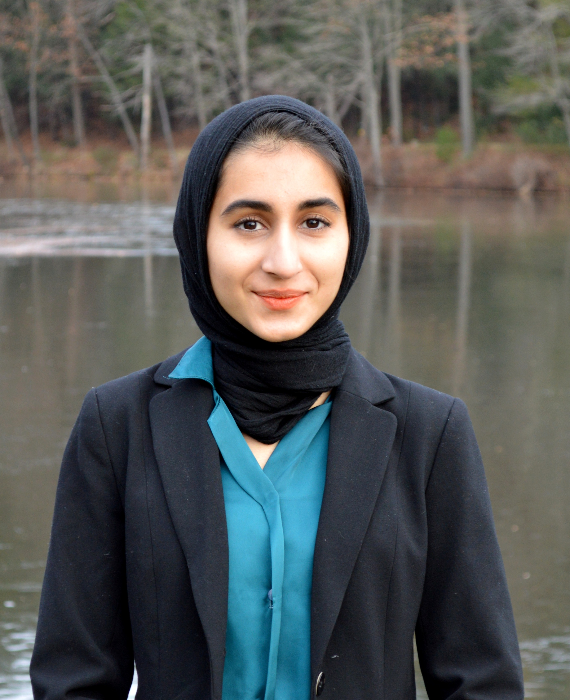
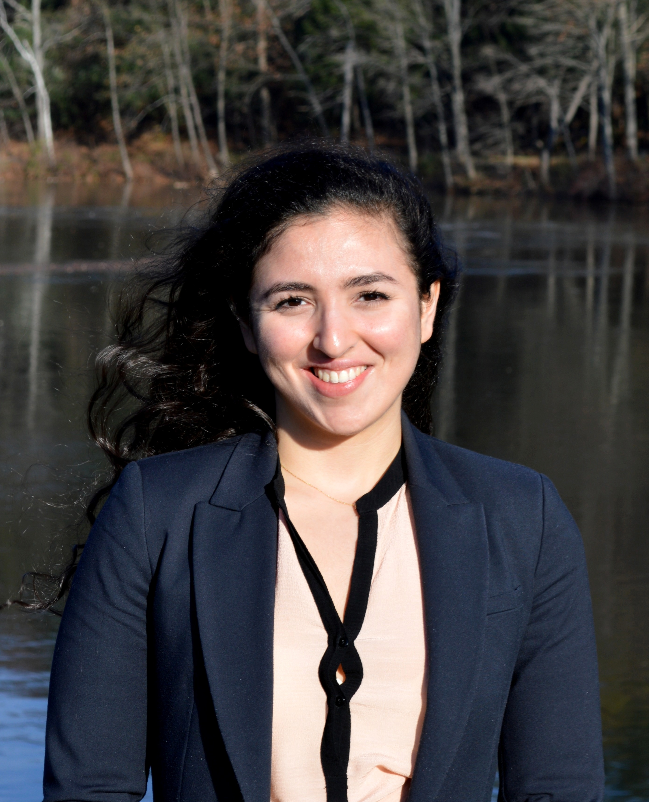
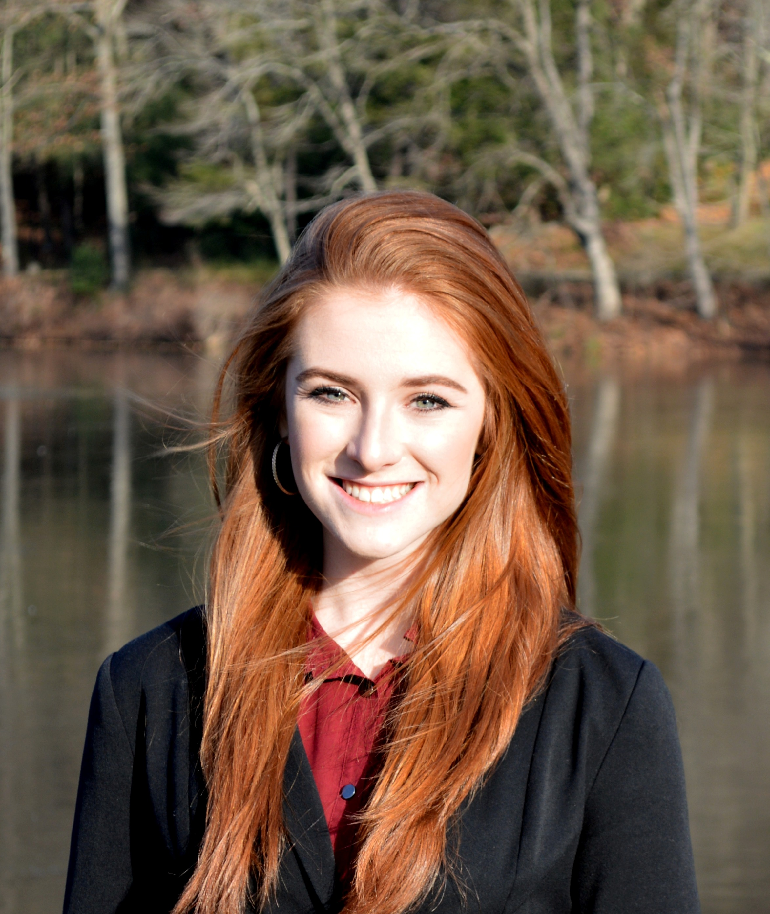
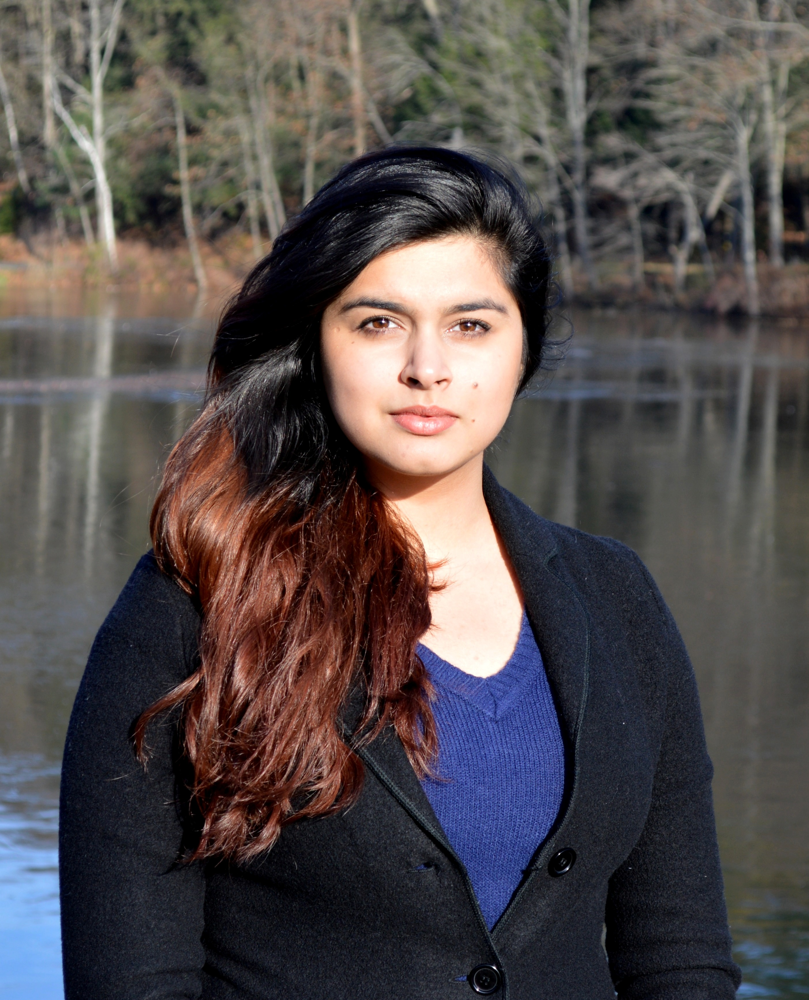
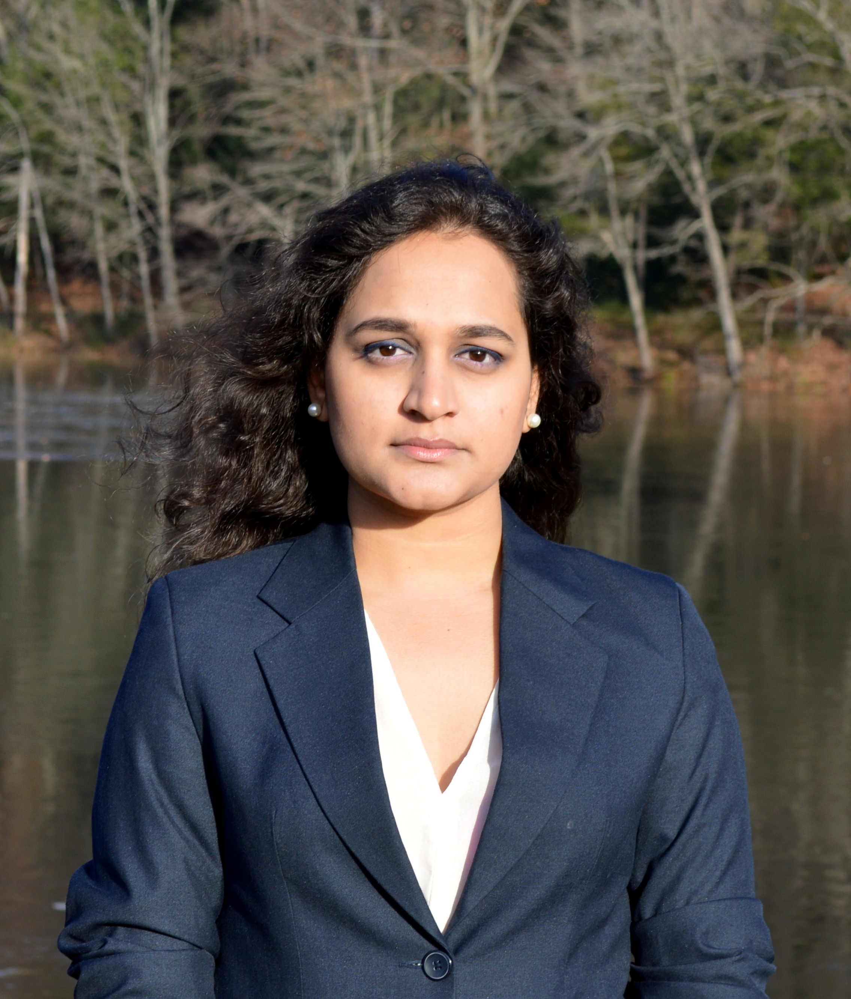

Our Secretariat
Congyi (Kate) Li
Secretary General
li28c@mtholyoke.edu

Nicole Daphnis
Director General: USG of Committees and Summits
daphn22n@mtholyoke.edu

Aayushi Mishra
USG of Committees and Summits
mishr23a@mtholyoke.edu
Anisha Pai
Director of Delegate Affairs
pai22m@mtholyoke.edu

Yewon Lee
Director of Committee Operations
lee52y@mtholyoke.edu/p>

Michelle Son
Director of Special Events
son23m@mtholyoke.edu

Rachel Sul
Director of Logistics
sul22s@mtholyoke.edu

Victoria (Weiduo) Cai
Director of Publicity
cai23w@mtholyoke.edu
Committees
Erdoğan Cabinet: Cabinet of the Turkish President
The Red Cavalry: the Russian Civil War
Lord of the Rings
The Cuban Revolution
Reconstruction Era United States
Democracy and Empire: Taisho Period Japan

Taiping Rebellion